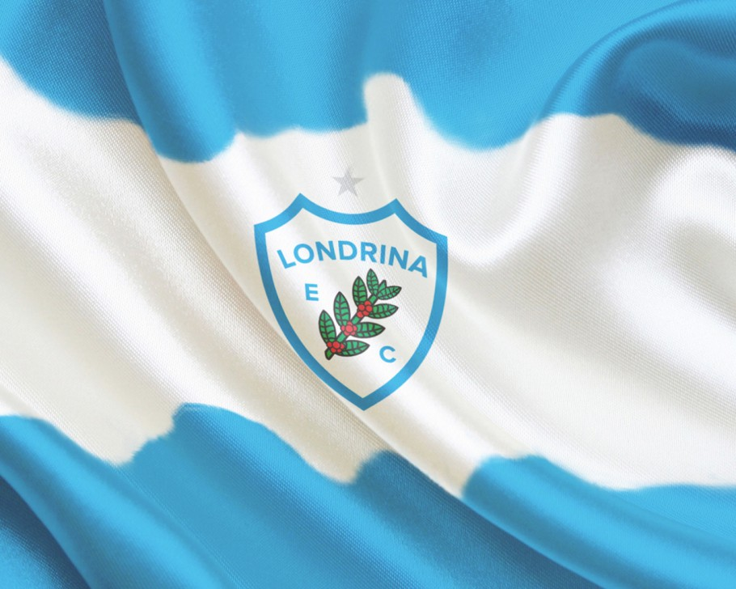
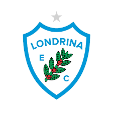
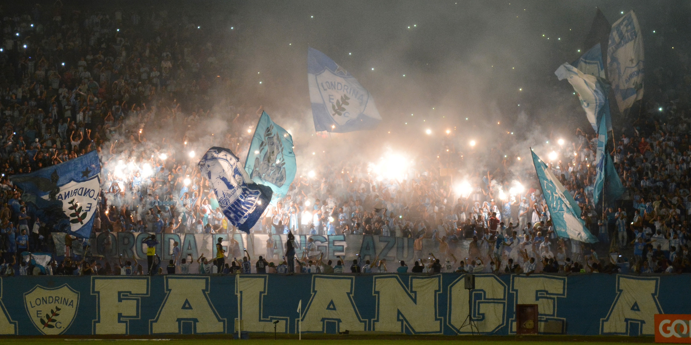
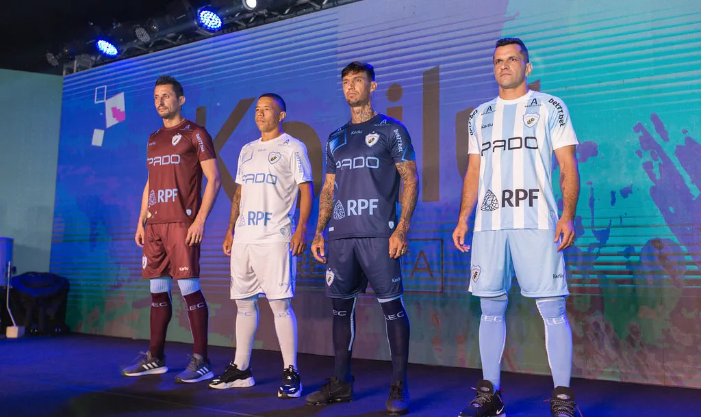
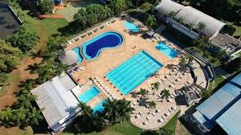

O Londrina tem uma bandeira?
O Londrina tem uma bandeira azul e branca com o logo do clube no meio.


O Londrina tem uma bandeira azul e branca com o logo do clube no meio.

Sim, o Londrina Futebol Clube tem torcida organizada.

O time do Londrina tem 4 tipos de uniforme

O Londrina Esporte Clube (LEC) está em fase de expansão de sua estrutura com a construção de um novo Centro de Treinamento (CT) de 105.000 m² na Zona Sul. O projeto, com investimento de R$ 17 milhões pela SAF (Squadra Sports), contará com seis campos, hotel e instalações modernas, com conclusão total prevista para 2029. Atualmente, a base e treinos operam no Estádio VGD (Vitorino Gonçalves Dias).
